Avoid
The full break, for a chemical that has
no place in your diet right now.
Understand your intolerances and find the foods that work for your body.
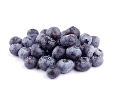
Blueberries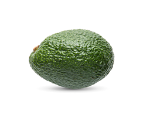
AvocadoHF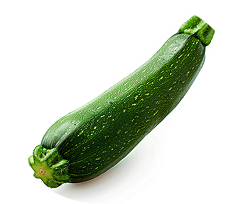
ZucchiniF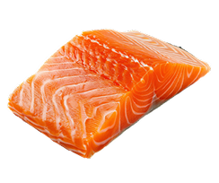
Salmon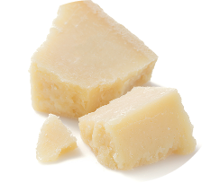
ParmesanHL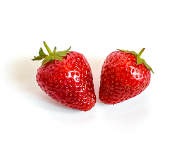
StrawberriesHF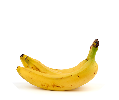
BananaHFFrom how you feel to what to eat in three easy steps.
Seven main triggers across more than 500 whole foods, with numbers that come from real research.
Histamine · FODMAPs · Lactose · Gluten · Salicylates · Oxalates · Sulfur
Tolerance is rarely all or nothing, so you decide how strict to be with each chemical. Say histamine is your trigger.
The full break, for a chemical that has
no place in your diet right now.
For a trigger you keep low without
cutting out completely.
Paying attention without restricting, for a trigger
you’re still figuring out.
For a chemical that fits easily on your plate.
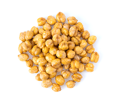
ChickpeasMedium histamineThe whole story behind every food in one place
The whole story behind every food in one place
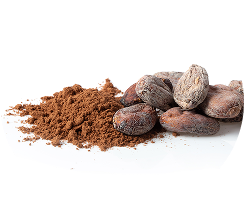
A fine, deep-brown powder pressed from roasted cacao beans, intensely bitter and chocolatey.
Red because you avoid sulfur and keep oxalates low — at these levels, each one alone makes it red.
Your body uses magnesium for your muscles, your nerves, and making energy. Falling short is surprisingly common, partly because processed diets tend to be low in it.
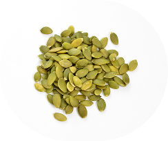
Pumpkin seedsExcellent source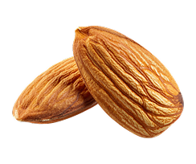
AlmondsExcellent source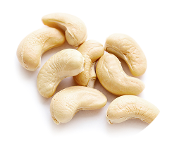
CashewsExcellent sourceOpen any food to see which of the 7 chemicals it contains, and why it lands at your tolerance level.
Move any food to green, yellow, or red whenever it matches how you really feel.
Pick any nutrient, from iron to magnesium, and see which of the foods you tolerate have the most.
Look back on how your list changes as you go.
A personal food list of 500+ whole foods, each with your own tolerance level: from what works well to what's best avoided. You'll also see which foods on your list are the richest sources of each nutrient, so you can cover any gaps with foods you actually tolerate.
No, the app is completely free.
Yes, whether you have one intolerance or several overlapping ones, the list is shaped around exactly the chemicals you react to. For each one, you decide how far to limit it in your diet.
Yes, and since everyone's reactions are a little different, you can change any food to match what your body actually tells you.
The app covers 500+ whole foods right now. If something's missing, just write to us at hello@riofoodplan.com and we'll add it.
The chemical content of every food is based on published scientific research and trusted data sources. Where the data disagrees, the more careful number is used.